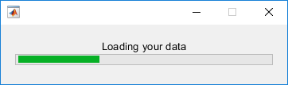
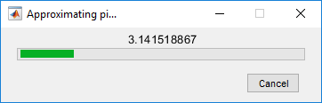

waitbar
Create or update wait bar dialog box
Description
Note
uiprogressdlg is recommended over
waitbar because it provides additional
customization options.
f = waitbar(x,msg)x. The dialog box remains open until the code that
controls it closes it or the user clicks the close button (X) in the dialog box
title bar. The Figure object is returned as
f.
Use the waitbar function if you want to show a wait bar
dialog box over multiple app windows, the MATLAB® desktop, or Simulink® and still be able to interact with them before responding to the
dialog box.
f = waitbar(x,msg,Name,Value)figure properties on the dialog box. For example,
'Name','Progress' sets the dialog box name to Progress.
Specify name-value pair arguments after all other input arguments.
waitbar( updates the length of the
bar in the current wait bar dialog box to x)x. Successive
values of x normally increase. If they decrease, the wait bar
runs in reverse.
Examples
Create a wait bar dialog box that updates the fractional wait bar length and message at three points in the code.
Use this code to simulate performing a lengthy computation. The
pause function passes the figure object of the
first wait bar dialog box to subsequent waitbar
function calls. Passing the figure object this way ensures that the dialog
box is updated at each point, rather than recreated. When the simulated
calculation completes, the dialog box closes.
function basicwaitbar f = waitbar(0,'Please wait...'); pause(.5) waitbar(.33,f,'Loading your data'); pause(1) waitbar(.67,f,'Processing your data'); pause(1) waitbar(1,f,'Finishing'); pause(1) close(f) end

Add a Cancel button to enable a user to stop an in-progress computation.
Use the following code to converge on the value of pi in
for loop iterations, updating the wait bar and
message with each iteration. When a user clicks the
Cancel button MATLAB sets a logical flag, 'canceling',
to 1 (true) in the figure application data (appdata). The
code tests for that value within the for loop and exits the loop if the flag
value is 1.
Set the CreateCancelBtn callback to a character vector
value. This practice is not recommended unless the code specified by the
value is simple, such as is the case in this callback code. For more
information, see Create Callbacks for Apps Created Programmatically.
function approxpi f = waitbar(0,'1','Name','Approximating pi...',... 'CreateCancelBtn','setappdata(gcbf,''canceling'',1)'); setappdata(f,'canceling',0); % Approximate pi^2/8 as: 1 + 1/9 + 1/25 + 1/49 + ... pisqover8 = 1; denom = 3; valueofpi = sqrt(8 * pisqover8); steps = 20000; for step = 1:steps % Check for clicked Cancel button if getappdata(f,'canceling') break end % Update waitbar and message waitbar(step/steps,f,sprintf('%12.9f',valueofpi)) % Calculate next estimate pisqover8 = pisqover8 + 1 / (denom * denom); denom = denom + 2; valueofpi = sqrt(8 * pisqover8); end delete(f) end

Input Arguments
Fractional wait bar length, specified as a real number between
0 and 1. Successive values of
x normally increase. If they decrease, then the wait
bar runs in reverse.
Example: .75
Wait bar message, specified as a character vector, cell array of character vectors, or string array. The message displays within the dialog box, above the progress bar.
If you specify the message as a character vector, then a long message wraps to fit the dialog box.
If you specify the message as a cell array of character vectors, then line breaks occur between each array element. Long elements wrap to fit the dialog box.
Example: 'Please Wait'
Example: {'Please wait', 'The operation is
processing'}
Figure object of a previously created wait bar dialog box, specified as the output variable used when that figure object was created.
Name-Value Arguments
Specify optional pairs of arguments as
Name1=Value1,...,NameN=ValueN, where Name is
the argument name and Value is the corresponding value.
Name-value arguments must appear after other arguments, but the order of the
pairs does not matter.
Before R2021a, use commas to separate each name and value, and enclose
Name in quotes.
Example: 'Name','Wait Bar'
Note
The properties listed here are only a subset of the properties you can set.
For a full list, see Figure.
Cancel button callback, specified as a function
handle, cell array, or character vector (not recommended). MATLAB sets both the
Cancel button callback and the figure
CloseRequestFcn callback value to the commands
specified by the callback argument value. For more
information, see Create Callbacks for Apps Created Programmatically.
Note
Call the delete function to remove a wait
bar dialog box when you specify a
CreateCancelBtn callback. When you
specify the CreateCancelBtn callback, the
close function does not close the
dialog box and makes the Cancel and close
(X) buttons unresponsive. This situation occurs because the
CreateCancelBtn callback recursively
calls itself. In such a situation, you must forcibly remove the
wait bar, for example using code such as this:
set(groot,'ShowHiddenHandles','on') delete(get(groot,'Children'))
Example: waitbar(.5,'Processing','CreateCancelBtn',@myfun)
specifies the CreateCancelBtn callback function as a
function handle.
Example: waitbar(.5,'Processing','CreateCancelBtn',{@myfun,x})
specifies the CreateCancelBtn callback function as a
cell array. In this case, the function accepts the input argument,
x.
Name of the figure, specified as a character vector or a string scalar.
Example: figure('Name','Results') sets the name of the figure to
'Results'.
By default, the name is 'Figure n', where
n is an integer. When you specify the
Name property, the title of the figure becomes 'Figure
n: name'. If you want only
the Name value to appear, set IntegerHandle or
NumberTitle to
'off'.
Location and size of the drawable area, specified as a vector
of the form [left bottom width height]. This area
excludes the figure borders, title bar, menu bar, and tool bars.
This table describes each element in the Position vector.
| Element | Description |
|---|---|
left | Distance from the left edge of the primary display to the inner left edge of the window. This
value can be negative on systems that have more than one
monitor. If the figure is docked, then this value is relative to the Figure panel within the MATLAB desktop. |
bottom | Distance from the bottom edge of the primary display to the inner bottom edge of the window.
This value can be negative on systems that have more than one
monitor. If the figure is docked, then this value is relative to the Figure panel within the MATLAB desktop. |
width | Distance between the right and left inner edges of the waitbar. |
height | Distance between the top and bottom inner edges of the window. |
All measurements are in units
specified by the Units property.
You cannot specify the figure Position property
when the figure is docked.
In MATLAB
Online™, the bottom and left elements of the
Position vector are ignored.
To place the full window, including the borders, title bar,
menu bar, tool bars, use the OuterPosition property.
Note
The Windows® operating system enforces a minimum window width and a maximum window size. If you specify a figure size outside of those limits, the displayed figure conforms to the limits instead of the size you specified.
Units of measurement, specified as one of the values from this table.
| Units Value | Description |
|---|---|
'points' (default) | Points. One point equals 1/72nd of an inch. |
'pixels' | Pixels. On Windows and Macintosh systems, the size of a pixel is 1/96th of an inch. This size is independent of your system resolution. On Linux® systems, the size of a pixel is determined by your system resolution. |
'normalized' | These units are normalized with respect to the
parent container. The lower-left corner of the
container maps to (0,0) and the
upper-right corner maps to
(1,1). |
'inches' | Inches. |
'centimeters' | Centimeters. |
'characters' | These units are based on the default uicontrol font of the graphics root object:
To access the default uicontrol
font, use
|
MATLAB measures all units from the lower left corner of the parent object.
This property affects the Position property. If
you change the Units property, consider returning
its value to the default value after completing your computation to
avoid affecting other functions that assume the default value.
The order in which you specify the Units and
Position properties has these effects:
If you specify the
Unitsbefore thePositionproperty, then MATLAB setsPositionusing the units you specify.If you specify the
Unitsproperty after thePositionproperty, MATLAB sets the position using the defaultUnits. Then, MATLAB converts thePositionvalue to the equivalent value in the units you specify.
Window style, specified as one of the following:
'normal'— The figure window is independent of other windows, and the other windows are accessible while the figure is displaying.'modal'— The figure displays on top of all existing figure windows, making them inaccessible as long as the top figure exists and remains modal. However, any new figures created after a modal figure will display.When multiple modal windows exist, the most recently created window keeps focus and stays above all other windows until it becomes invisible, or is returned to a normal window style, or is deleted. At that time, focus reverts to the window that last had focus.
'docked'— The figure displays in the desktop or a document window. When theWindowStyleproperty is set to'docked', you cannot set theDockControlsproperty to'off'. The'docked'option is not supported in MATLAB Online.
Note
These are some important characteristics of the WindowStyle
property and some recommended best practices:
When you create UI windows, always specify the
WindowStyleproperty. If you also want to set theResize,Position, orOuterPositionproperties of the figure, then set theWindowStyleproperty first.You can change the
WindowStyleproperty of a figure at any time, including when the figure is visible and contains children. However on some systems, setting this property might cause the figure to flash or disappear and reappear, depending on the system's implementation of normal and modal windows. For best visual results, set theWindowStyleproperty at creation time or when the figure is invisible.Calling
reseton a figure does not change the value of theWindowStyleproperty.
Modal Window Style Behavior
When WindowStyle is set to 'modal', the
figure window traps all keyboard and mouse actions over all MATLAB windows as long as the windows are visible. Windows belonging to
applications other than MATLAB are unaffected.
Typing Ctrl+C when a modal figure has focus causes that figure to
revert to a 'normal'
WindowStyle property setting. This allows the user to type at
the command line.
Figures with the WindowStyle property set to
'modal' and the Visible property set to
'off' do not behave modally until MATLAB makes them visible. Therefore, you can hide a modal window for later
reuse, instead of destroying it.
Modal figures do not display menu children, built-in menus, or toolbars. But, it
is not an error to create menus in a modal figure or to change the
WindowStyle property setting to 'modal'
on a figure with menu children. The Menu objects exist and the
figure retains them. If you reset the figure's WindowStyle
property to 'normal', the menus display.
More About
A modal dialog box prevents a user from interacting with other MATLAB windows before responding to the dialog box.
A nonmodal dialog box enables a user to interact with other MATLAB windows before responding to the dialog box. A nonmodal dialog box is also referred to as a normal dialog box.
An indicator that displays what percentage of a calculation is complete as the calculation proceeds by progressively filling a bar with color from left to right. A wait bar is also referred to as a progress bar.
Tips
To create a modal progress dialog box for single-window App Designer or
uifigure-based apps, use theuiprogressdlgfunction instead.
Version History
Introduced before R2006a
See Also
close | delete | getappdata | setappdata | uiprogressdlg